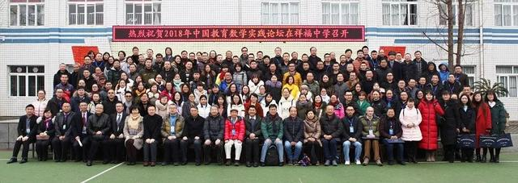
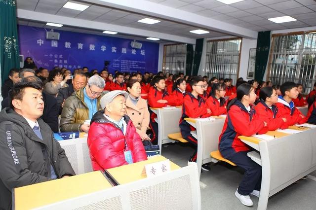
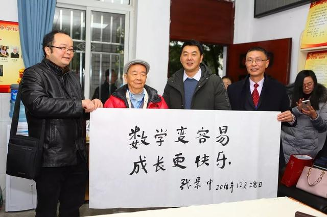
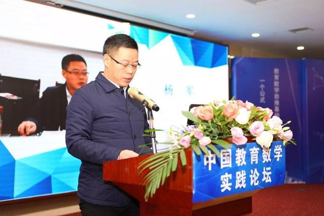
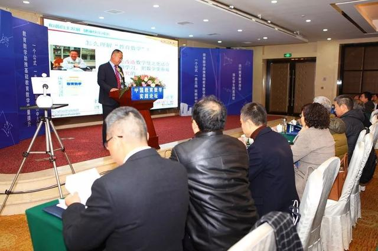
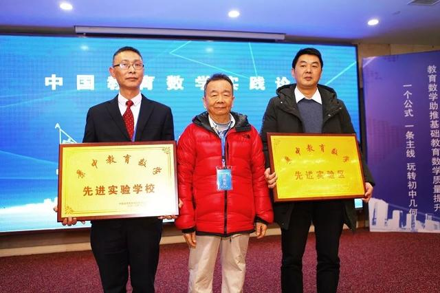
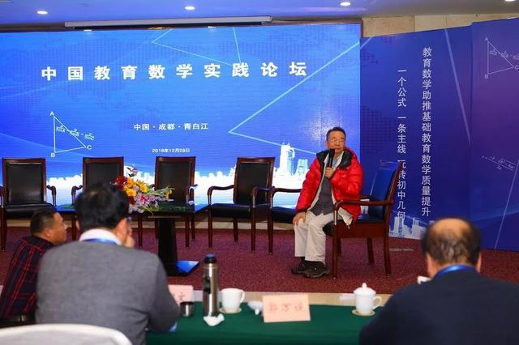

近日，中国教育数学实践论坛在成都市祥福中学举行。中国科学院院士张景中、华东师范大学教授柴俊、西安电子科技大学教授高淑萍、北京航空航天大学教授李尚志、首都师范大学教授刘晓玫、西北师范大学教授吕世虎、广州大学智能软件研究所所长饶永生、中央民族大学教授孙晓天、上海大学教授王卿文、首都师范大学副教授曾小平、北京市十一学校一分校副校长章巍、浙江师范大学教授张维忠以及成都市教科院基础教育研究所副所长黄祥勇、成都师范学院数学学院院长李兴贵、中国高等教育学会教育数学专业委员会副秘书长赖虎强、成都景中教育软件有限公司董事长尧刚等来自全国的专家学者聚首青白江，围绕教育数学的理论与实践展开深入探讨与交流。
活动当天，专家学者、参会领导和老师们分小组走进祥福中学教室现场观摩七、八、九三个年级的数学课，现场感受教育数学在一线课堂的实践应用。在学校会议室，张景中院士现场泼墨挥毫，为祥福中学题词“数学变容易，成长更快乐”，鼓励祥福中学一如既往坚持应用教育数学，并深入研究、实践探索，以期获得更多更好的实践应用经验并广泛推广。


观摩课后，与会人员来到论坛活动主会场，就教育数学与自己日常数学教学的深度融合、网络画板等先进教学手段在数学教学中的应用等主题进行精彩的经验分享。
成都市青白江区人民政府副区长杨军出席论坛活动并致辞，对来自全国各地的专家学者、优秀教师表示热烈的欢迎，并希望全区参会教师认真聆听和学习，用学习所得促进自身专业发展，为促进学校办学水平和教育教学质量的提升，为青白江建设现代化教育强区、办人民满意的一流教育贡献力量。

随后，上海大学教授王卿文、成都师范学院数学学院院长李兴贵分别作主题报告。我区祥福中学校副校长艾永俊现场作题为《农村初中教育数学教学实践的顶层设计》经验交流。论坛过程中，张景中院士为青白江区和祥福中学分别颁发了“景中教育教学先进试验区”和 “景中教育教学先进试验学校”奖牌。


紧接着，来自龙王学校、祥福中学、棕北中学、盐道街中学、邛崃冉义中学、新津五津中学等学校老师现场分享了教育数学与自己日常数学教学的深度融合经验以及网络画板等先进教学手段在数学教学中的应用成果。中国高等教育学会教育数学专业委员会副秘书长赖虎强、成都景中教育软件有限公司董事长尧刚分别作《名师工作室开展重建三角实践活动的体会与策略》《基于教育数学实验的网络画板》专题报告。
最后，华东师范大学教授柴俊主持“专家沙龙”，与专家们就教学过程中遇到的一些问题和困惑作深度交流，与会老师们认真聆听、积极参与、收获满满。最后，张景中院士作针对性点评，与大家展开交流互动。本次论坛在热烈的讨论氛围中圆满结束。

教育数学是数学家、计算机科学家张景中院士研究的成果之一，四川成都已有三年多的教育数学实践试验，参加试验的学校层次分明，规模较大。以成都市青白江区祥福中学等为代表的普通学校，全面应用了张景中院士的教育数学和教育信息化成果，获得成功，具有较大的借鉴研究价值。让学生学习容易的数学，简单的数学，是教育数学的终极目标。本次中国教育数学实践论坛通过基础课程课堂教学观摩、实践学校经验交流、专家互动等多种方式，认真总结了四川三年多的教育数学实践研究情况，汇聚各方智慧，必将推动教育数学和数学学科信息化在全国范围内广泛运用。